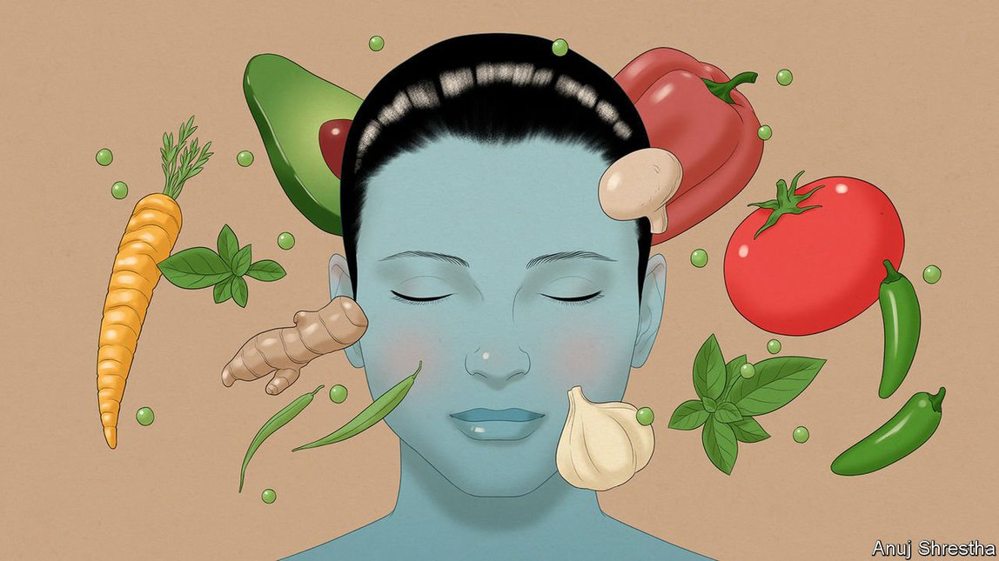
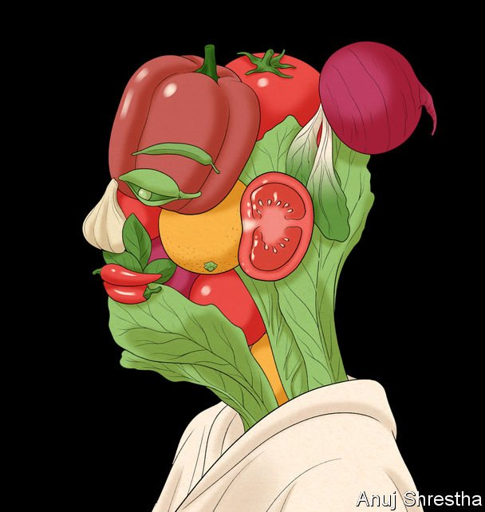

Text
2021-08-06T05:56:37+00:00
You are what you eat: January 2035
人如其食：2035年1月
人如其食：2035年1月
What if everyone’s nutrition was personalised?
如果每个人的营养摄入都个性化会怎样？
如果每個人的營養攝入都個性化會怎樣？
How the mass adoption of personalised nutrition is changing people’s health—and the food industry. An imagined scenario from 2035
个性化营养的广泛普及如何改变人们的健康——以及食品行业。2035年的想象场景【《畅想未来》系列之三】
個性化營養的廣泛普及如何改變人們的健康——以及食品行業。2035年的想象場景【《暢想未來》系列之三】

“LET FOOD be thy medicine and medicine be thy food.” The diktat from Hippocrates, who defined the principles of medicine in ancient Greece, hovers in bright holographic characters over the main stage at the World Economic Forum in Davos. The central theme this year is how to make personalised nutrition more widely available to those unable to afford its benefits. Hot topics include whether metabo-watches, implants and other personal-nutrition trackers should be free for everyone (as they are now in some Nordic countries), why personalised nutrition is good for business and the perennial debate over how governments can best regulate corporate use of consumers’ personal data.
“以食为药。”古希腊创立了医学原则的希波克拉底如是说。这句话以明亮的全息字符投射在世界经济论坛主席台的上方。今年达沃斯论坛的主题是如何让个性化营养更广泛地覆盖那些没有经济能力来享受它的益处的人群。其中的热门议题包括是否应该为所有人分发免费的代谢手表和植入设备等个人营养追踪器（就像目前一些北欧国家所做的那样）；个性化营养为何对企业有益；以及政府如何能最有效地监管企业对个人数据的使用这一由来已久的争论。
“以食為葯。”古希臘創立了醫學原則的希波克拉底如是說。這句話以明亮的全息字符投射在世界經濟論壇主席台的上方。今年達沃斯論壇的主題是如何讓個性化營養更廣泛地覆蓋那些沒有經濟能力來享受它的益處的人群。其中的熱門議題包括是否應該為所有人分發免費的代謝手錶和植入設備等個人營養追蹤器（就像目前一些北歐國家所做的那樣）；個性化營養為何對企業有益；以及政府如何能最有效地監管企業對個人數據的使用這一由來已久的爭論。
Amid the arguments, there is broad consensus that the rise of personalised nutrition has done a lot to promote healthy and environmentally friendly eating over the past decade. In 2031 the proportion of obese Americans fell for the first time in more than 20 years, and the rate of diabetes has fallen for three years in a row from its all-time high of 22%. Europeans are getting slimmer and healthier, too.
在争论之中有一项共识：过去十年中个性化营养的兴起为促进健康和环保的饮食做出了很大贡献。2031年，美国肥胖人口比例20多年来首次下降，糖尿病发病率从22%的历史高位连续三年下降。欧洲人也越来越苗条和健康了。
在爭論之中有一項共識：過去十年中個性化營養的興起為促進健康和環保的飲食做出了很大貢獻。2031年，美國肥胖人口比例20多年來首次下降，糖尿病發病率從22%的歷史高位連續三年下降。歐洲人也越來越苗條和健康了。
But progress has been slower than hoped, and in emerging markets obesity is still rising, hobbling economic growth. Environmentally sustainable eating, though increasingly popular in the rich world, is still not on track to reach the “planetary health diet” target set by scientists in 2019 in the Lancet, a medical journal. That target, which big food manufacturers and many other firms have pledged to support, called for a 50% worldwide cut in red meat and sugar consumption and a doubling of the consumption of nuts, fruits, vegetables and legumes between 2020 and 2050.
但进展比预期慢，而在新兴市场，肥胖症仍在上升，拖累经济增长。环境可持续饮食虽然在富裕国家日益普遍，但以目前的进度将难以实现科学家2019年在医学期刊《柳叶刀》上设定的“全球健康饮食”目标：在2020年至2050年间将全球红肉和糖的消费量减少50%，坚果、水果、蔬菜和豆类的消费量翻番。大型食品制造商和许多其他企业都已承诺支持这个目标。
但進展比預期慢，而在新興市場，肥胖症仍在上升，拖累經濟增長。環境可持續飲食雖然在富裕國家日益普遍，但以目前的進度將難以實現科學家2019年在醫學期刊《柳葉刀》上設定的“全球健康飲食”目標：在2020年至2050年間將全球紅肉和糖的消費量減少50%，堅果、水果、蔬菜和豆類的消費量翻番。大型食品製造商和許多其他企業都已承諾支持這個目標。
That personalised nutrition is the best way to drum up demand for healthier and more earth-friendly foods became clear in the mid-2020s. A decade earlier, scientists had begun to unravel why one-size dietary guidelines in the form of food pyramids, sugar and fat labels and so forth were not turning the tide on diabetes, obesity and other diseases caused by bad diets. Faddish regimens with catchy names like Keto or Paleo worked for some people but were useless for many, if not most, people who tried them. And people who lost weight often found it hard to sustain.
在2020年代中期有一件事已经变得很清楚：个性化营养是激发对更健康、更环保的食品的需求的最佳方式。再回溯十年，科学家们开始探究为何以食物金字塔、糖和脂肪标签等形式呈现的一刀切的饮食指南并没有扭转糖尿病、肥胖症和其他由不良饮食引起的疾病的上升趋势。像生酮饮食（Keto）或原始饮食（Paleo）这类名字悦耳的时兴疗法对一些人有效，但对尝试过它们的许多人甚至可能是大多数人都毫无用处。减轻了体重的人常常发现难以维持瘦身成效。
在2020年代中期有一件事已經變得很清楚：個性化營養是激發對更健康、更環保的食品的需求的最佳方式。再回溯十年，科學家們開始探究為何以食物金字塔、糖和脂肪標籤等形式呈現的一刀切的飲食指南並沒有扭轉糖尿病、肥胖症和其他由不良飲食引起的疾病的上升趨勢。像生酮飲食（Keto）或原始飲食（Paleo）這類名字悅耳的時興療法對一些人有效，但對嘗試過它們的許多人甚至可能是大多數人都毫無用處。減輕了體重的人常常發現難以維持瘦身成效。
The diets that came and went until the 2020s required steely willpower and careful planning. The biggest problem, however, was their failure to recognise that people’s bodies react differently to the same foodstuffs. By the late 2010s mounting scientific evidence showed that meals that were perfectly healthy for one person could be another person’s fast-track path to diabetes, obesity or heart disease.
一直到2020年代，各种风靡一时的食谱都需要人们有钢铁般的意志力和细致的规划。然而，最大的问题是它们没有认识到人们的身体对相同的食物会产生不同的反应。在2010年代后期已有越来越多科学证据表明，对某个人完全健康的膳食可能会成为另一个人患上糖尿病、肥胖症或心脏病的捷径。
一直到2020年代，各種風靡一時的食譜都需要人們有鋼鐵般的意志力和細緻的規劃。然而，最大的問題是它們沒有認識到人們的身體對相同的食物會產生不同的反應。在2010年代後期已有越來越多科學證據表明，對某個人完全健康的膳食可能會成為另一個人患上糖尿病、肥胖症或心臟病的捷徑。
It turned out that even the same meal eaten by the same person at a different time of day could be metabolised in a more or less healthy way, depending on their other eating, sleeping and exercise patterns. The most crucial discovery was the role of the microbiome, the colony of 100trn microbes living in the human gut. The microbiome, it turned out, was the factory that converted food into the various substances the body needs to function—as well as those that cause poor health. And everyone’s microbiome is unique.
事实证明，即使同一个人在一天中的不同时间吃同一餐，也可能会以更健康或更不健康的程度代谢，这取决于他们的其他饮食、睡眠和运动习惯。最重要的一项发现是微生物组所扮演的角色。微生物组是存活在人类肠道中的百万亿个微生物组成的群落。人们发现它是将食物转化为身体运作所需的各种物质（以及导致健康问题的物质）的工厂。而每个人的微生物组都是独一无二的。
事實證明，即使同一個人在一天中的不同時間吃同一餐，也可能會以更健康或更不健康的程度代謝，這取決於他們的其他飲食、睡眠和運動習慣。最重要的一項發現是微生物組所扮演的角色。微生物組是存活在人類腸道中的百萬億個微生物組成的群落。人們發現它是將食物轉化為身體運作所需的各種物質（以及導致健康問題的物質）的工廠。而每個人的微生物組都是獨一無二的。
A landmark in the idea of personalised nutrition was a study published in 2015 by researchers at the Weizmann Institute in Israel. They devised an algorithm based on artificial intelligence that could accurately predict an individual’s response to any given food, measured by continuous blood-glucose monitoring with a small device attached to the upper arm. Spikes in blood glucose after meals are known markers for weight gain and a panoply of metabolic disorders. The algorithm used data on lifestyle, medical background and the composition of the microbiome. Within three years scientists in America, Britain and Germany had replicated the Israeli team’s work and the business of personalised nutrition entered a new era.
个性化营养理念的一个里程碑是以色列的魏茨曼科学研究所（Weizmann Institute）的研究人员在2015年发表的一项研究。他们设计了一种基于人工智能的算法，通过戴在上臂的一个小装置连续监测血糖，可以准确地预测个体对任何特定食物的反应。餐后血糖飙升是体重增加和一系列代谢紊乱的已知指标。该算法使用了生活方式、病历和微生物组组成等数据。三年内，美国、英国和德国的科学家成功复制了以色列团队的研究，个性化营养产业步入了新时代。
個性化營養理念的一個里程碑是以色列的魏茨曼科學研究所（Weizmann Institute）的研究人員在2015年發表的一項研究。他們設計了一種基於人工智能的算法，通過戴在上臂的一個小裝置連續監測血糖，可以準確地預測個體對任何特定食物的反應。餐後血糖飆升是體重增加和一系列代謝紊亂的已知指標。該算法使用了生活方式、病歷和微生物組組成等數據。三年內，美國、英國和德國的科學家成功複製了以色列團隊的研究，個性化營養產業步入了新時代。
During the early 2020s the number of startups offering bespoke nutritional advice by algorithm soared. Some used mail-in samples of body fluids or continuous monitoring devices to track blood levels of glucose, lipids, vitamins and so on. A few, including DayTwo, Million Friends and Zoe, did microbiome mapping too (through genomic analysis of everything found in a person’s stool sample). Many firms did just the bare minimum: checking for a handful of genes that had been linked with certain reactions to various foods. This had limited utility. By the late 2020s the market had reached maturity after a brutal shake-out.
2020年代初，通过算法给出定制营养建议的创业公司猛增。一些使用邮寄的体液样本或持续监测设备来跟踪用户的血糖、血脂、血液中维生素水平等指标。DayTwo、Million Friends和Zoe等一小批公司也展开了微生物组图谱分析（通过对人的粪便样本中发现的所有物质进行基因组分析）。许多公司只做了最低限度的工作：筛查与各种食物引发的某些反应相关联的少数基因。这么做的用处有限。到2020年代后期，市场在经过一轮残酷的大洗牌之后已经成熟。
2020年代初，通過算法給出定製營養建議的創業公司猛增。一些使用郵寄的體液樣本或持續監測設備來跟蹤用戶的血糖、血脂、血液中維生素水平等指標。DayTwo、Million Friends和Zoe等一小批公司也展開了微生物組圖譜分析（通過對人的糞便樣本中發現的所有物質進行基因組分析）。許多公司只做了最低限度的工作：篩查與各種食物引發的某些反應相關聯的少數基因。這麼做的用處有限。到2020年代後期，市場在經過一輪殘酷的大洗牌之後已經成熟。
Soup-to-nuts service
套餐服务
套餐服務
A handful of firms have thrived and are now household names. EatLogic, the second-largest, agreed last month to be acquired by Google, subject to regulatory approval. The leaders all have essentially the same business model. Their apps and algorithms identify what people should eat and avoid, and keep track of what is in their cupboards, refrigerators and online shopping carts. AI-generated recipes use flavour combinations favoured by leading chefs. The apps also analyse restaurant menus and recommend which dishes to order—sometimes with minor tweaks, such as swapping a vegetable or changing a salad dressing. All this helps people make good food choices. Accuracy has steadily improved as the implants and wearable devices paired with these services have become smaller, cheaper and more capable.
少数公司茁壮成长，如今已家喻户晓。其中规模第二大的EatLogic在上个月和谷歌达成收购协议，但还要等待监管部门批准。市场领军者的商业模式本质上并无二致。它们的应用和算法确定人们该吃什么，不该吃什么，并跟踪他们的橱柜、冰箱和在线购物车里的食品。人工智能生成的食谱使用顶尖厨师青睐的风味组合。这些应用还分析餐厅菜单，并推荐点什么菜——有时只需稍作调整，例如更换一种蔬菜或沙拉酱。所有这些都有助于人们做出有益的食物选择。随着与这些服务配套的植入物和可穿戴设备变得更小、更便宜而功能更强大，准确性也稳步提高。
少數公司茁壯成長，如今已家喻戶曉。其中規模第二大的EatLogic在上個月和谷歌達成收購協議，但還要等待監管部門批准。市場領軍者的商業模式本質上並無二致。它們的應用和算法確定人們該吃什麼，不該吃什麼，並跟蹤他們的櫥櫃、冰箱和在線購物車裡的食品。人工智能生成的食譜使用頂尖廚師青睞的風味組合。這些應用還分析餐廳菜單，並推薦點什麼菜——有時只需稍作調整，例如更換一種蔬菜或沙拉醬。所有這些都有助於人們做出有益的食物選擇。隨着與這些服務配套的植入物和可穿戴設備變得更小、更便宜而功能更強大，準確性也穩步提高。
Makers of kitchen appliances, such as Philips and Samsung, have been central to the personalised-nutrition ecosystem since the early 2020s. At Davos their chief executives talked about the challenges—and opportunities for public health—of developing cheaper models for emerging markets, where the number of middle-class households is growing fast. (Obesity is also most common in that demographic segment.) Industry bosses reckon that in countries like India and Kenya, about 20% of households can afford a smart fridge, though one with far fewer features than the models that are now standard in America. In 2034 just over half of American households had a smart fridge linked to a personal-nutrition account.
自2020年代初以来，飞利浦和三星等厨房电器制造商一直处于个性化营养生态系统的核心。在达沃斯，它们的首席执行官谈论为新兴市场开发更便宜的型号所面临的挑战以及将带来的公共卫生机遇。那些市场的中产家庭队伍正快速扩大，而肥胖症在这个人群中也是最常见的。行业老板估计，在印度和肯尼亚等国家，大约20%的家庭买得起智能冰箱，尽管其功能远比不上美国市场上通行的冰箱。2034年，略超过一半的美国家庭拥有一台与个人营养账号相关联的智能冰箱。
自2020年代初以來，飛利浦和三星等廚房電器製造商一直處於個性化營養生態系統的核心。在達沃斯，它們的首席執行官談論為新興市場開發更便宜的型號所面臨的挑戰以及將帶來的公共衛生機遇。那些市場的中產家庭隊伍正快速擴大，而肥胖症在這個人群中也是最常見的。行業老闆估計，在印度和肯尼亞等國家，大約20%的家庭買得起智能冰箱，儘管其功能遠比不上美國市場上通行的冰箱。2034年，略超過一半的美國家庭擁有一台與個人營養賬號相關聯的智能冰箱。

The food industry has also adapted surprisingly quickly to the personalised-nutrition revolution, given how slowly it moved to reduce salt and sugar in processed foods. Its transformation is evident on supermarket shelves, where processed foods are available in multiple variants, tuned for each of the main metabo-types identified by scientists. (Some variants are, for example, higher in fat and fibre but lower in protein.)
想想食品行业在减少加工食品中的盐糖含量上进展何其缓慢，它向个性化营养革命的调适可说是快得惊人。这一转变在超市货架上一览无遗，那里的加工食品分不同风味，就科学家确定的每种主要代谢类型做出调整。例如，一些口味的脂肪和纤维含量较高，蛋白质含量较低。
想想食品行業在減少加工食品中的鹽糖含量上進展何其緩慢，它向個性化營養革命的調適可說是快得驚人。這一轉變在超市貨架上一覽無遺，那裡的加工食品分不同風味，就科學家確定的每種主要代謝類型做出調整。例如，一些口味的脂肪和纖維含量較高，蛋白質含量較低。
Artificial meat and fish grown from animal stem-cells—which in 2034 surpassed the traditional variety by sales volume—also come in metabo-type varieties that include different ratios of the fat, protein, minerals and vitamins found in “real” animal products. Restaurant menus, too, increasingly cater to the most prevalent metabo-types among their clientele.
用动物干细胞培育的人造肉和人造鱼在2034年的销量超过了传统品种。它们也分不同的代谢类型，含有不同比例的在“真正的”动物产品中发现的脂肪、蛋白质、矿物质和维生素。餐厅菜单也越来越多地迎合自己客户中最主要的代谢类型。
用動物幹細胞培育的人造肉和人造魚在2034年的銷量超過了傳統品種。它們也分不同的代謝類型，含有不同比例的在“真正的”動物產品中發現的脂肪、蛋白質、礦物質和維生素。餐廳菜單也越來越多地迎合自己客戶中最主要的代謝類型。
One of the most contentious topics discussed at Davos was how to make personalised nutrition more affordable. The first-generation services, offered in the early 2020s, started at several hundred dollars for initial tests, and hefty monthly fees thereafter. Today’s most basic plans are about 80% cheaper, after adjusting for inflation. Users who let providers sell their personal data get hefty discounts, though some regulators are looking to curtail the practice. Employers, health insurers and governments are increasingly subsidising personalised-nutrition plans and offering vouchers and other perks to obedient users.
达沃斯论坛上最具争议的论题之一是如何让个性化营养变得更便宜。第一代服务于2020年代初推出，初始检测以几百美元起价，之后收取高额月费。在经通胀调整后，今天最基本的套餐已便宜了80%左右。那些任由服务供应商出售个人数据的用户可以获得大幅折扣，但一些监管机构正在寻求限制这种操作。雇主、医疗保险商和政府正在增加对个性化营养计划的补贴，并向认真遵循计划的用户提供代金券和其他优惠。
達沃斯論壇上最具爭議的論題之一是如何讓個性化營養變得更便宜。第一代服務於2020年代初推出，初始檢測以幾百美元起價，之後收取高額月費。在經通脹調整後，今天最基本的套餐已便宜了80%左右。那些任由服務供應商出售個人數據的用戶可以獲得大幅折扣，但一些監管機構正在尋求限制這種操作。僱主、醫療保險商和政府正在增加對個性化營養計劃的補貼，並向認真遵循計劃的用戶提供代金券和其他優惠。
But cost is not the only hurdle to greater uptake. In England, the National Health Service offers a free plan to everyone, along with subsidised personal devices that can be paired with it. This helps explain why about 70% of adults in England now use a personalised-nutrition service, the highest rate in the world. Convincing the remaining 30%, which includes many of those who stand to benefit the most from changing their diets, will take a lot more than free gadgets. Many take a dim view of the whole idea, because of conspiracy theories that doctors are struggling to dispel.
但成本并不是扩大普及的唯一障碍。英国全民医疗服务体系（NHS）为全体国民提供免费计划，并为可与之配对的个人设备提供补贴。这有助于解释为什么英国目前约有70%的成年人使用个性化营养服务，这一比例是世界上最高的。要说服其余30%的人——其中包括许多能从改变饮食中获益最多的人——远远不是提供免费小设备就够的。许多人相信阴谋论（医生们很难驱除这些言论），质疑整套理念。
但成本並不是擴大普及的唯一障礙。英國全民醫療服務體系（NHS）為全體國民提供免費計劃，並為可與之配對的個人設備提供補貼。這有助於解釋為什麼英國目前約有70%的成年人使用個性化營養服務，這一比例是世界上最高的。要說服其餘30%的人——其中包括許多能從改變飲食中獲益最多的人——遠遠不是提供免費小設備就夠的。許多人相信陰謀論（醫生們很難驅除這些言論），質疑整套理念。
In the final debate on the main stage at Davos, the majority of speakers were optimistic about the future potential of the technology, while others worried about the difficulty of expanding adoption within these more “hesitant” groups. The discussion ended on a bittersweet note. Personalised nutrition, it seems, is not to everyone’s taste. ■
在达沃斯主席台的最后辩论中，大多数发言者对这项技术的未来潜力持乐观态度，其他人则担心在上述更“犹豫”的群体中扩大采用的难度。这场讨论以甘苦参半的滋味收尾。看起来，个性化营养并不符合每个人的口味。
在達沃斯主席台的最後辯論中，大多數發言者對這項技術的未來潛力持樂觀態度，其他人則擔心在上述更“猶豫”的群體中擴大採用的難度。這場討論以甘苦參半的滋味收尾。看起來，個性化營養並不符合每個人的口味。